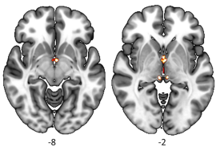
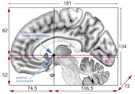

RELATÓRIO - João Silva
Baixar RelatórioVolume Parênquima Cerebral
953 cm³
Volume Hipocampo (ambos)
Abaixo do P1%
Córtex Temporal Bilateral
Atrofia Detectada
Sistema Ventricular
Normal
Evolução Volumétrica por Área
Imagem Axial (Exemplo)

Imagem Sagital (Exemplo)

Achados Clínicos
- Fração de Parênquima Cerebral (FPC): Dentro da faixa normal para a idade.
- Substância Cinzenta: Volumes nos lobos parietal direito e temporal bilateral abaixo do percentil 1%.
- Hipocampos: Ambos os volumes abaixo do percentil 1%.
- Sistema Ventricular: Dentro da normalidade.
- Tronco Encefálico e Cerebelo: Volumes normais.
Volumes Globais (cm³)
| Estrutura | Volume |
|---|---|
| Parênquima Cerebral | 953 cm³ |
| Substância Branca | 469 cm³ |
| Substância Cinzenta | 484 cm³ |
| Líquido Cefalorraquidiano | 489 cm³ |
| Volume Ventricular | 55.5 cm³ |
Áreas com Variações Críticas
- Hipocampo esquerdo: -7.56%/ano
- Hipocampo direito: -5.90%/ano
- Córtex temporal bilateral: abaixo do percentil 1%
- Substância branca hemisférica: -2.87%/ano (dir), -2.91%/ano (esq)
- Substância cinzenta cerebelar dir.: -1.73%/ano
Conclusão Clínica
O paciente apresenta redução significativa nos volumes dos hipocampos e do córtex temporal bilateral, com indicadores consistentes de atrofia. O volume de parênquima cerebral está dentro da normalidade, assim como o sistema ventricular e tronco encefálico. Recomenda-se acompanhamento com especialista.